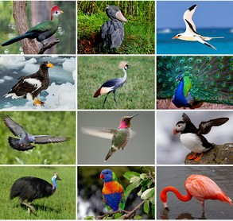

places must visit

taj mahal
it is a great place to visit
The Taj Mahal is an ivory-white marble mausoleum on the right bank of the river Yamuna in Agra, Uttar Pradesh, India. It was commissioned in 1631 by the fifth Mughal emperor, Shah Jahan to house the tomb of his beloved wife, Mumtaz Mahal. It also houses the tomb of Shah Jahan himself. The tomb is the centrepiece of a 17-hectare complex, which includes a mosque and a guest house, and is set in formal gardens bounded on three sides by a crenellated wall. Construction of the mausoleum was essentially completed in 1643, but work continued on other phases of the project for another 10 years. The Taj Mahal complex is believed to have been completed in its entirety in 1653 at a cost estimated at the time to be around ₹32 million, which in 2023 would be approximately ₹35 billion.
Click the link to know the directions.

machu picchu
it is a great place to visit
Machu Picchu is a 15th-century Inca citadel located in the Eastern Cordillera of southern Peru on a 2,430-meter (7,970 ft) mountain ridge. Often referred to as the "Lost City of the Incas", it is the most familiar icon of the Inca Empire. It is located in the Machupicchu District within Urubamba Province above the Sacred Valley, which is 80 kilometers (50 mi) northwest of Cusco. The Urubamba River flows past it, cutting through the Cordillera and creating a canyon with a tropical mountain climate. In reference to the site’s name, for most English or Spanish speakers, the first 'c' in Picchu is silent.The Inca civilization had no written language and, after the discovery by a Spanish soldier Baltasar Ocampo, by the end of the 16th-century no more Europeans visited the site until the 19th century, so far as is known, so there are no written records of the site while it was in use. The names of the buildings, their supposed uses, and their inhabitants are the product of modern archaeologists based on physical evidence, including tombs at the site. Machu Picchu was built in the classical Inca style, with polished dry-stone walls. Its three primary structures are the Intihuatana, the Temple of the Sun, and the Temple of the Three Windows
Click the link to know the directions.

petra
it is a great place to visit
Petra is a historic and archaeological city in southern Jordan. Famous for its rock-cut architecture and water conduit system, Petra is also called the "Rose City" because of the colour of the stone from which it is carved. It was famously called "a rose-red city half as old as time" in a poem of 1845 by John Burgon. It is adjacent to the mountain of Jabal Al-Madbah, in a basin surrounded by mountains forming the eastern flank of the Arabah valley running from the Dead Sea to the Gulf of Aqaba. Access to the city is through a famously picturesque 1.2-kilometre-long (3⁄4 mi) gorge called the Siq, which leads directly to the Khazneh. The area around Petra has been inhabited from as early as 7000 BC, and the Nabataeans might have settled in what would become the capital city of their kingdom as early as the 4th century BC. Archaeological work has only discovered evidence of Nabataean presence dating back to the second century BC, by which time Petra had become their capital. The Nabataeans were nomadic Arabs who invested in Petra's proximity to the incense trade routes by establishing it as a major regional trading hub.
Click the link to know the directions.

grand canyon
it is a great place to visit
The Grand Canyon is a steep-sided canyon carved by the Colorado River in Arizona, United States. The Grand Canyon is 277 miles (446 km) long, up to 18 miles (29 km) wide and attains a depth of over a mile (6,093 feet or 1,857 meters). The canyon and adjacent rim are contained within Grand Canyon National Park, the Kaibab National Forest, Grand Canyon–Parashant National Monument, the Hualapai Indian Reservation, the Havasupai Indian Reservation and the Navajo Nation. The surrounding area is contained within the Baaj Nwaavjo I'tah Kukveni – Ancestral Footprints of the Grand Canyon National Monument. President Theodore Roosevelt was a major proponent of the preservation of the Grand Canyon area and visited it on numerous occasions to hunt and enjoy the scenery.
Click the link to know the directions.

the great pyramid of giza
it is a great place to visit
The Great Pyramid of Giza is the largest Egyptian pyramid and served as the tomb of pharaoh Khufu, who ruled during the Fourth Dynasty of the Old Kingdom. Built in the early 26th century BC, over a period of about 27 years, the pyramid is the oldest of the Seven Wonders of the Ancient World, and the only wonder that has remained largely intact. It is the most famous monument of the Giza pyramid complex, which is part of the UNESCO World Heritage Site "Memphis and its Necropolis". It is situated at the northern end of the line of the three pyramids at Giza. Initially standing at 146.6 metres (481 feet), the Great Pyramid was the world's tallest human-made structure for more than 3,800 years.
Click the link to know the directions.

great wall of china
it is a great place to visit
The Great Wall of China (traditional Chinese: 萬里長城; simplified Chinese: 万里长城; pinyin: Wànlǐ Chángchéng, literally "ten thousand li long wall") is a series of fortifications that were built across the historical northern borders of ancient Chinese states and Imperial China as protection against various nomadic groups from the Eurasian Steppe. Several walls were built from as early as the 7th century BC, with selective stretches later joined by Qin Shi Huang (220–206 BC), the first emperor of China. Little of the Qin wall remains. Later on, many successive dynasties built and maintained multiple stretches of border walls. The best-known sections of the wall were built by the Ming dynasty (1368–1644).
Click the link to know the directions.
statue of liberty
it is a great place to visit
The Statue of Liberty is a colossal neoclassical sculpture on Liberty Island in New York Harbor in New York City, in the United States. The copper statue, a gift from the people of France, was designed by French sculptor Frédéric Auguste Bartholdi and its metal framework was built by Gustave Eiffel. The statue was dedicated on October 28, 1886.The statue is a figure of Libertas, the Roman Goddess of Liberty. She holds a torch above her head with her right hand, and in her left hand carries a tabula ansata inscribed JULY IV MDCCLXXVI (July 4, 1776 in Roman numerals), the date of the U.S. Declaration of Independence. A broken chain and shackle lie at her feet as she walks forward, commemorating the national abolition of slavery following the American Civil War.[8] After its dedication, the statue became an icon of freedom and of the United States, seen as a symbol of welcome to immigrants arriving by sea.
Click the link to know the directions.

the eiffel tower
it is a great place to visit
The Eiffel Tower is a wrought-iron lattice tower on the Champ de Mars in Paris, France. Constructed from 1887, it is named after the engineer Gustave Eiffel, whose company designed and built the tower.Locally nicknamed "La dame de fer" (French for "Iron Lady"), it was constructed from 1887 to 1889 as the centerpiece of the 1889 World's Fair. Although initially criticised by some of France's leading artists and intellectuals for its design, it has since become a global cultural icon of France and one of the most recognisable structures in the world. The tower received 5,889,000 visitors in 2022, up by 197 per cent from 2021, when numbers dropped due to the COVID virus. The Eiffel Tower is the most visited monument with an entrance fee in the world: 6.91 million people ascended it in 2015. It was designated a monument historique in 1964, and was named part of a UNESCO World Heritage Site ("Paris, Banks of the Seine") in 1991.
Click the link to know the directions.

the sydney opera house
it is a great place to visit
The Sydney Opera House is a multi-venue performing arts centre in Sydney, Australia. Located on the foreshore of Sydney Harbour, it is widely regarded as one of the world's most famous and distinctive buildings and a masterpiece of 20th-century architecture. Designed by Danish architect Jørn Utzon, but completed by an Australian architectural team headed by Peter Hall, the building was formally opened by Queen Elizabeth II on 20 October 1973, 16 years after Utzon's 1957 selection as winner of an international design competition. The Government of New South Wales, led by the premier, Joseph Cahill, authorised work to begin in 1958 with Utzon directing construction. The government's decision to build Utzon's design is often overshadowed by circumstances that followed, including cost and scheduling overruns as well as the architect's ultimate resignation. The building and its surrounds occupy the whole of Bennelong Point on Sydney Harbour, between Sydney Cove and Farm Cove, adjacent to the Sydney central business district and the Royal Botanic Gardens, and near to the Sydney Harbour Bridge.
Click the link to know the directions.

the colosseum
it is a great place to visit
The Colosseum is an elliptical amphitheatre in the centre of the city of Rome, Italy, just east of the Roman Forum. It is the largest ancient amphitheatre ever built, and is still the largest standing amphitheatre in the world, despite its age. Construction began under the emperor Vespasian (r. 69–79 AD) in 72 and was completed in 80 AD under his successor and heir, Titus (r. 79–81). Further modifications were made during the reign of Domitian (r. 81–96). The three emperors who were patrons of the work are known as the Flavian dynasty, and the amphitheatre was named the Flavian Amphitheatre (Latin: Amphitheatrum Flavium; Italian: Anfiteatro Flavio [aɱfiteˈaːtro ˈflaːvjo]) by later classicists and archaeologists for its association with their family name (Flavius).
Click the link to know the directions.
Some more famous places:
movies

Excellent film to culminate MCU ride
Avengers: Endgame is a 2019 American superhero film based on the Marvel Comics superhero team the Avengers. Produced by Marvel Studios and distributed by Walt Disney Studios Motion Pictures, it is the direct sequel to Avengers: Infinity War (2018) and the 22nd film in the Marvel Cinematic Universe (MCU). Directed by Anthony and Joe Russo and written by Christopher Markus and Stephen McFeely, the film features an ensemble cast including Robert Downey Jr., Chris Evans, Mark Ruffalo, Chris Hemsworth, Scarlett Johansson, Jeremy Renner, Don Cheadle, Paul Rudd, Brie Larson, Karen Gillan, Danai Gurira, Benedict Wong, Jon Favreau, Bradley Cooper, Gwyneth Paltrow, and Josh Brolin. In the film, the surviving members of the Avengers and their allies attempt to reverse Thanos's actions in Infinity War.

Excellent film to culminate MCU ride
The Lion King is a 1994 American animated musical drama film produced by Walt Disney Feature Animation and released by Walt Disney Pictures. The 32nd Disney animated feature film and the fifth produced during the Disney Renaissance, it is inspired by William Shakespeare's stage play Hamlet with some elements from the Biblical stories of Joseph and Moses and Disney's 1942 animated feature film Bambi. The film was directed by Roger Allers and Rob Minkoff (in their feature directorial debuts) and produced by Don Hahn, from a screenplay written by Irene Mecchi, Jonathan Roberts, and Linda Woolverton. The film features an ensemble voice cast that includes Matthew Broderick, James Earl Jones, Jeremy Irons, Jonathan Taylor Thomas, Nathan Lane, Ernie Sabella, Rowan Atkinson, and Robert Guillaume. Its original songs were written by composer Elton John and lyricist Tim Rice, with a score by Hans Zimmer.

Excellent film to culminate MCU ride
Frozen 2 (stylized as Frozen II) is a 2019 American computer-animated musical fantasy film produced by Walt Disney Animation Studios and distributed by Walt Disney Studios Motion Pictures. The 58th animated film produced by the studio, it is the sequel to Frozen (2013). The film was directed by Chris Buck and Jennifer Lee, produced by Peter Del Vecho, and written by Lee,[a] Buck, Marc Smith, Kristen Anderson-Lopez, and Robert Lopez. It stars the voices of Kristen Bell, Idina Menzel, Josh Gad, and Jonathan Groff. Set three years after the first film, Frozen II follows sisters Anna and Elsa, iceman Kristoff, his reindeer Sven, and the snowman Olaf as they travel to an enchanted forest to unravel the origin of Elsa's magical power.
information about organisms
-
Information about birds

Birds are a group of warm-blooded vertebrates constituting the class Aves (/ˈeɪviːz/), characterised by feathers, toothless beaked jaws, the laying of hard-shelled eggs, a high metabolic rate, a four-chambered heart, and a strong yet lightweight skeleton.
Birds live worldwide and range in size from the 5.5 cm (2.2 in) bee hummingbird to the 2.8 m (9 ft 2 in) common ostrich.
There are about ten thousand living species, more than half of which are passerine, or "perching" birds.
Birds have wings whose development varies according to species; the only known groups without wings are the extinct moa and elephant birds. Wings, which are modified forelimbs, gave birds the ability to fly, although further evolution has led to the loss of flight in some birds, including ratites, penguins, and diverse endemic island species.
The digestive and respiratory systems of birds are also uniquely adapted for flight.
Some bird species of aquatic environments, particularly seabirds and some waterbirds, have further evolved for swimming. The study of birds is called ornithology.
Birds are feathered theropod dinosaurs and constitute the only known living dinosaurs. Likewise, birds are considered reptiles in the modern cladistic sense of the term, and their closest living relatives are the crocodilians.
Birds are descendants of the primitive avialans (whose members include Archaeopteryx) which first appeared during the Late Jurassic. According to DNA evidence, modern birds (Neornithes) evolved in the Early to Late Cretaceous, and diversified dramatically around the time of the Cretaceous–Paleogene extinction event 66 mya, which killed off the pterosaurs and all non-avian dinosaurs.
-
Information about animals
Animals are multicellular, eukaryotic organisms in the biological kingdom Animalia.
With few exceptions, animals consume organic material, breathe oxygen, have myocytes and are able to move, can reproduce sexually, and grow from a hollow sphere of cells, the blastula, during embryonic development.
As of 2022, 2.16 million living animal species have been described—of which around 1.05 million are insects, over 85,000 are molluscs, and around 65,000 are vertebrates.
It has been estimated there are around 7.77 million animal species. Animals range in length from 8.5 micrometres (0.00033 in) to 33.6 metres (110 ft). They have complex interactions with each other and their environments, forming intricate food webs. The scientific study of animals is known as zoology.
Most living animal species are in Bilateria, a clade whose members have a bilaterally symmetric body plan. The Bilateria include the protostomes, containing animals such as nematodes, arthropods, flatworms, annelids and molluscs, and the deuterostomes, containing the echinoderms and the chordates, the latter including the vertebrates.
Life forms interpreted as early animals were present in the Ediacaran biota of the late Precambrian.
Many modern animal phyla became clearly established in the fossil record as marine species during the Cambrian explosion, which began around 539 million years ago. 6,331 groups of genes common to all living animals have been identified; these may have arisen from a single common ancestor that lived 650 million years ago.